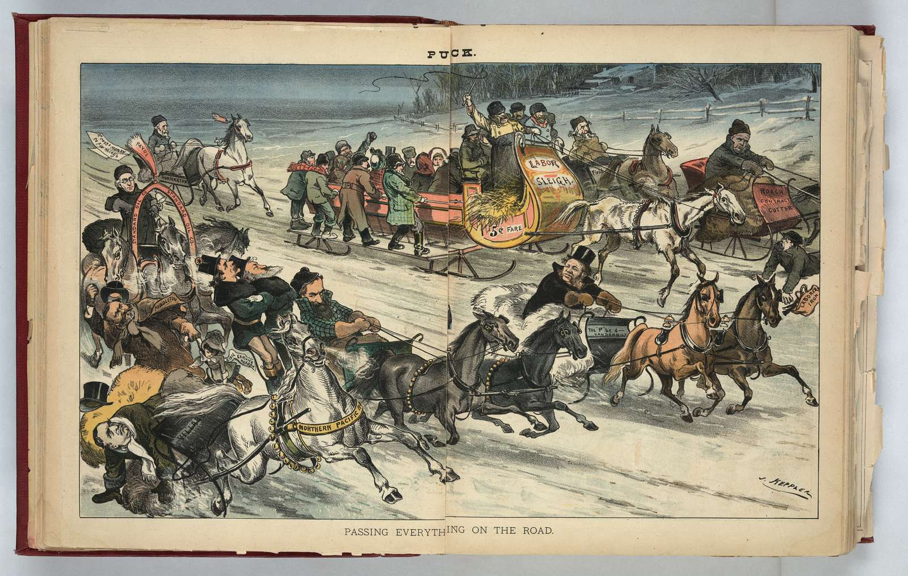
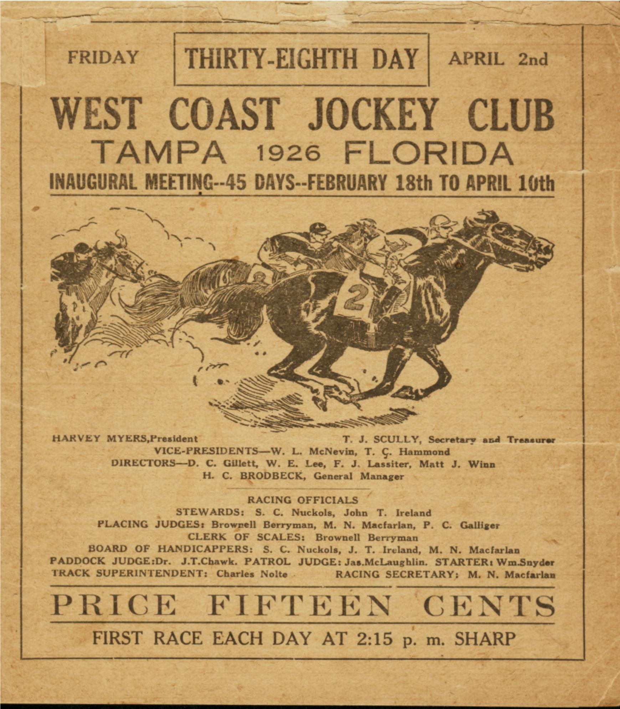
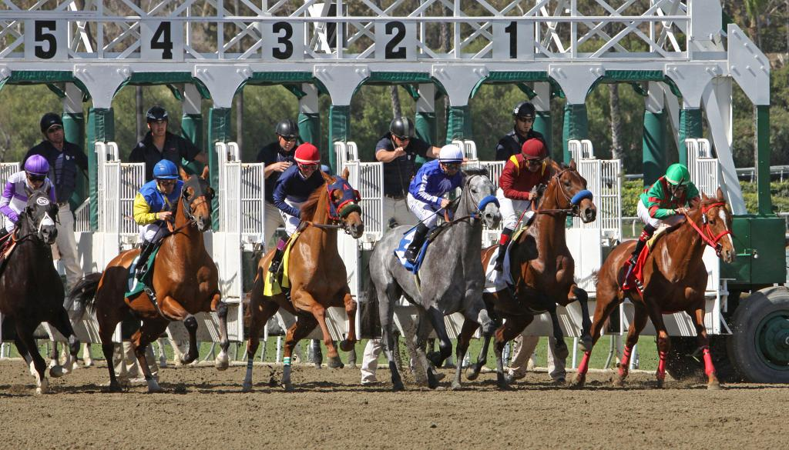

Horse racing is one of the sports which is practised from a very ancient era. It has a long history. There are a lot of archeological records indicating that horse racing occurred in Ancient Greece, Ancient Rome, Babylon, Syria, and Egypt. Myths and legends also indicate this sport, such as the contest between the steeds of the god Odin and the giant Hrungnir in Norse mythology.
Even though nowadays mounted horse racing is popular, both chariot and mounted horse racing were events in the ancient Greek Olympics by 648 BCE and were important in the other Panhellenic Games. It continued although chariot racing was often dangerous to both driver and horse, which frequently suffered serious injury and even death. In the Roman Empire, chariot and mounted horse racing were major industries. From the mid-fifteenth, spring carnival in Rome closed with a horse race. Fifteen to 20 riderless horses, originally imported from the Barbary Coast of North Africa, were set loose to run the length of the Via del Corso, a long, straight city street; their time was about two and a half minutes.

In later periods, Thoroughbred racing became, and still remains, popular with aristocrats and royalty of British society, earning it the title "Sport of Kings".
Historically, equestrians honed their skills through games and races. Equestrian competitions entertained spectators while showcasing the superior horsemanship required for combat. All forms of horse racing began as spontaneous contests between riders or drivers. The different competitions, which called for difficult and specialised skills from both horse and rider, led to the methodical development of specialised breeds and equipment for each sport. During the ages, the popularity of equestrian activities has allowed for the preservation of techniques that would have otherwise been lost once horses stopped being used in warfare.
Throughout the 18th century, horse racing flourished in Britain. In the 18th century and thereafter, its popularity grew steadily. King Charles II, a devoted sports fan who ruled from 1649 to 1685, was responsible for Newmarket's fame. He gave Newmarket its prominence. By 1750 the Jockey Club was formed to control the Newmarket races, set the rules of the game, prevent dishonesty, and make for a level field. Beginning in 1780, Epsom Derby. The St. Leger Stakes marked the start of the five classic events in 1776. Five yearly races were included when the system was finished in 1814.
The benchmarks were set by Newmarket and the Jockey Club, but the majority of the races were held in landowners' fields and in the burgeoning towns for huge amounts of local prestige and tiny financial payouts. All social classes, from the working class to royalty, took part in the wagering system, which was crucial to the financing and expansion of the industry. High society was in charge and made a special effort to keep the riff-raff and criminal element out of the betting area. The system required knowledgeable jockeys, trainers, grooms, and experts in breeding since real money was on the line, which created new, prominent jobs for rural working-class men. Every young ambitious stable boy could dream of making it big.
Horse racing is one of the few sports that continued during the 2020 COVID-19 crisis, with Australian and Hong Kong the two main racing jurisdictions to carry on, albeit with no crowds. The USA, United Kingdom and France were some of the more prominent racing bodies to either postpone or cancel all events.